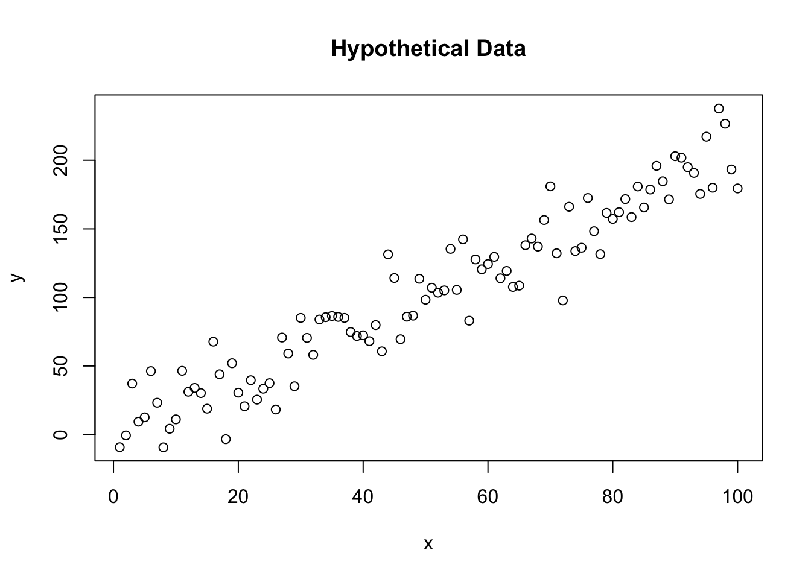
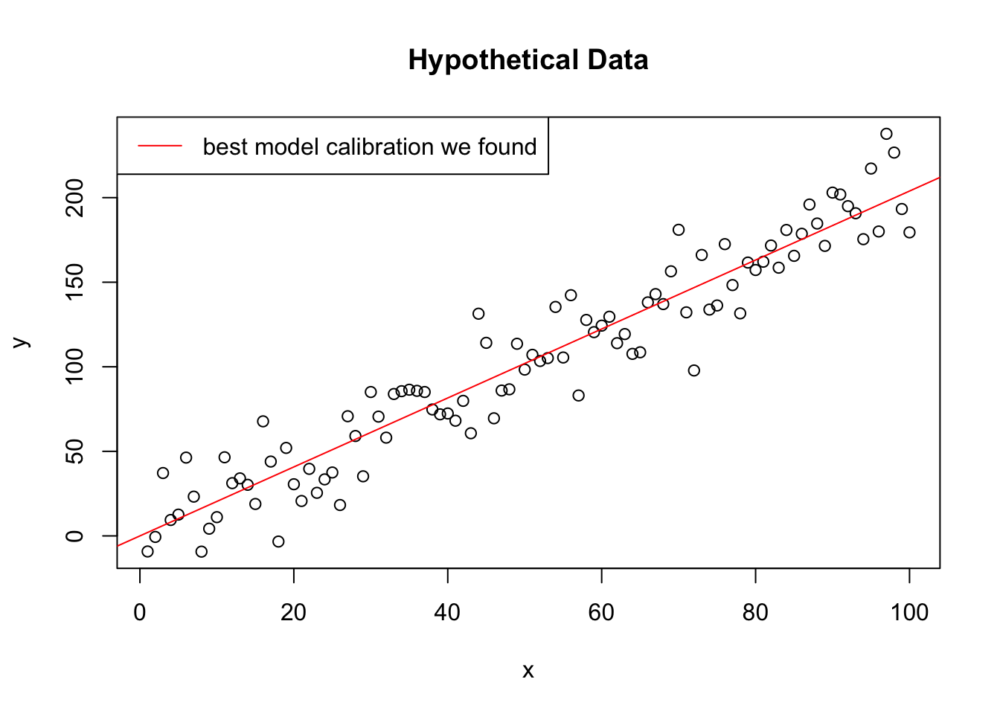

“Calibrating” a model means to find the best set of parameters that
make the model output as close as possible to the observed data.
Calibration is noting else than varying the values of model parameter
minimizing or maximizing a certain function. For example, if we want to
minimize the difference between the model output and the observed data,
we can simply:
1) start from a randomly selected parameter value and produce some model
output 2) sum the absolute value of the difference between the model
output and the observed data 3) fiddle with the parameter values at
random, changing them slightly, and repeat the process. If the sum of
the differences decreases, we keep the new parameter values, otherwise
we discard them.
This is probably the simplest calibration algorithm you can think about. And you can picture yourself in the process, which is no different than having a computer doing the same for you other than the speed at which the process can be executed. You can definitely calibrate a model without a computer, just using paper and pen (it will just take maybe a bit long).
We will calibrate now the simplest model I can think of, a linear model without intercept:
\[ y = \alpha \cdot x \] Where \(y\) is the model output, \(x\) is the input, and \(\alpha\) is the model parameter we want to calibrate.
The algorithm is a random search algorithm (which is the simplest approach I can think of), and will: 1) start from a randomly selected parameter value and produce some model output 2) sum the absolute value of the difference between the model output and the observed data 3) fiddle with the parameter values at random, changing them slightly, and repeat the process. If the sum of the differences decreases, we keep the new parameter values, otherwise we discard them.
The algorithm will in this case stop after a certain number of iterations. This is the simplest possible approach, but usually more refined algorithm have a stop condition instead (most often with a convergence threshold: the parameter starts to change very little for some time, and then the calibration stops).
First, we generate some data to use with the example
set.seed(123) # For reproducibility
x <- 1:100
y <- 2 * x + rnorm(100, mean = 0, sd = 20) # True slope is 2, with some noise
plot(x, y, main = "Hypothetical Data", xlab = "x", ylab = "y")
cost_function <- function(x, y, b) {
predictions <- b * x
mse <- mean((predictions - y)^2)
return(mse)
}We start by initializing the parameter \(\alpha\) (written in R code as “a”) at random, and set two meta-parameters to define how the algorithm will run: the learning rate and the number of iterations. The learning rate is a small number that will be multiplied by the gradient of the function we want to minimize, and the number of iterations is the number of times we will update the parameter \(\alpha\) (or when the calibration will stop).
set.seed(123) # For reproducibility
best_b <- 0 # Initial guess
best_cost <- cost_function(x, y, best_b)
learning_rate <- 0.01 # Step size for updating b
num_trials <- 1000for (i in 1:num_trials) {
proposal_b <- best_b + runif(1, -learning_rate, learning_rate) # Propose a new b within a range around the current best
proposal_cost <- cost_function(x, y, proposal_b)
if (proposal_cost < best_cost) {
best_b <- proposal_b
best_cost <- proposal_cost
}
}plot(x, y, main = "Hypothetical Data", xlab = "x", ylab = "y")
abline(a = 0, b = best_b, col = "red")
legend("topleft", legend = "best model calibration we found", col = "red", lty = 1)
Now, can you relate what this simple algorithm with the model parameter space?